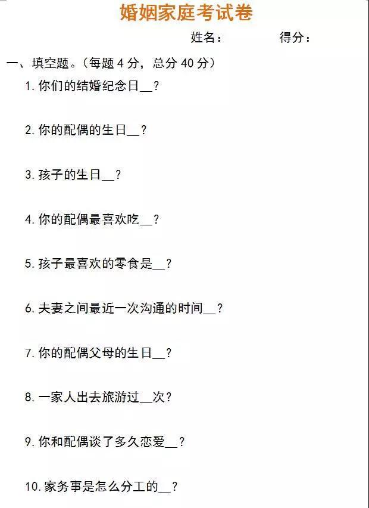
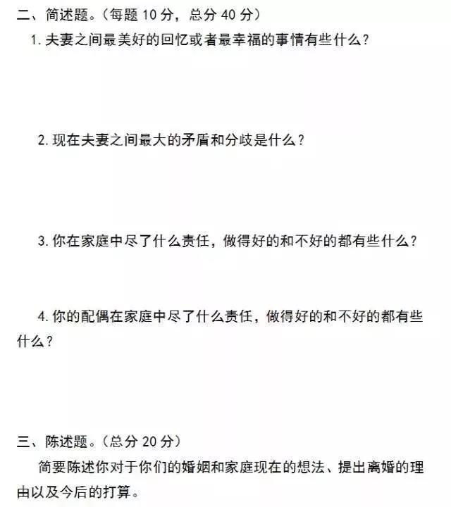
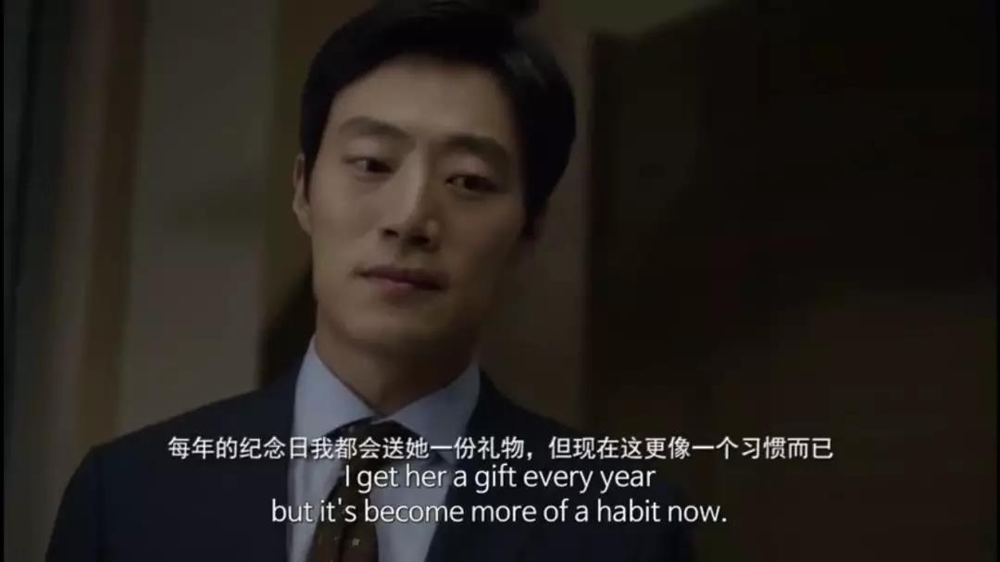
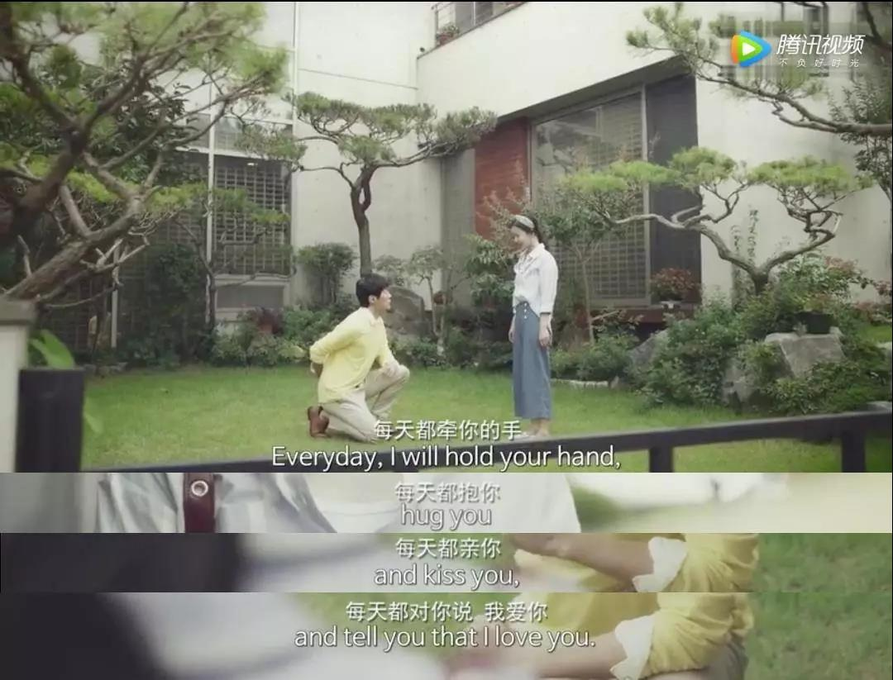

首 页
首 页 量 表
量 表 培 训
培 训 资 讯
资 讯 视 频
视 频 关 于 我 们
关 于 我 们
资讯> 爱不爱一个人，身体最诚实
爱不爱一个人，身体最诚实
最近，江苏某民政局推出一项新举措 ——《离婚考卷》。
这是一份针对前去办理离婚的夫妻出的试题问卷，民政局称如果认真答题，并且得分超过60，婚姻完全有挽回的可能。
 网友们看了里面的题目，一边为民政局用心点赞，一边又质疑其实际意义：如果感情真的病入膏肓，还能凭着这一张纸就扭转乾坤吗？
事实上，试卷只是个闸门，题目则是钥匙。当夫妻一同执笔，就等于穿越了时光隧道，从恋爱时期开始追溯，到两人为对方做过的点点滴滴；这些记忆一并串起，双方的怨念和仇恨之火都将被熄灭，随之而来的，会是遗憾和追悔。
但真正要重燃爱之烛火，必须还要开启一道最重要的仪式，就是身体的再度接纳。
所以，如果让我再增加一道题，它将是：在离婚之前，你还愿意和我再做一次吗？
01 婚姻里，什么才是最重要的仪式感？
黄磊曾对女儿多多说：未来如果一个男人既说娶你，又不给你婚礼，你千万不能嫁，因为他连婚礼这个仪式都省了，还有什么可以给你。
仪式感很重要，它源于人类渴望对抗生活的不确定性和重复性。在亲密关系里，被熟知的仪式有求爱和求婚的仪式，婚礼仪式，以及婚后记得彼此的生日和纪念日。
这些看似郑重其事的过程，体现的是双方对这份关系的确认和珍惜。
而推动人心甘情愿去履行这一系列仪式的，是爱，更是性。因此，有婚恋专家说，性才是婚姻中最大的仪式感。
唯有性，可以将婚恋关系与其他关系区别开来。性，是维系夫妻情感的纽带，他表层是肉体形式，深层却是维系双方精神的桥梁。
通过这种最本能、最纯粹的结合，性确认了两人的关系以及心意，表示双方依然互相吸引、互相贴近。
有人曾建议，当离婚变得如此便利，结婚就一定要更加谨慎，最好在结婚前，两人去进行一次长途旅行。
旅行是微缩版的婚姻生活，浪漫和现实参半，有意外也有惊喜。
重点是，两人除了牵手并肩，还一定会经历身体的碰撞和磨合。
几个日夜的厮磨后，如果更相爱了，这个爱很可能是从性中升华而来的；如果更排斥了，或许也是因为性的不匹配给爱减了分。
在恋爱中，双方精神上的结合当然是重中之重。然而，倘若缺乏了彼此身体上的默契，这将是一段不完整的、压抑的、甚至是扭曲的亲密关系。
2017年中国人口数据调查显示，中国离婚率正逐年攀升。促使夫妻离婚的原因中，婚内出轨竟然占比一半以上。
从前，我们习惯认为伴侣出轨是为了满足精神上的关注。近年，由于一部日剧的流行，另一个引起出轨的重要原因也渐渐被人们熟知 —— 婚内性满足的缺失。
日剧《昼颜》里，看似老实本分的纱和出了轨，而对象是同样内向沉闷的北野裕一郎。
他们明知不道德，却愿意顶着风险争分夺秒去约会；只因为，对方的身体可以满足自己的欲望。
纱和的丈夫长期冷待她，北野的妻子爱事业更胜于家庭，偶尔亲热一次，还是计划怀孕的择日播种行动，他表面隐忍内心却蠢蠢欲动。
当两个相同遭遇的人遇见并迅速懂得，爱就从性中萌芽，两人都飞蛾扑火，奋不顾身。
叔本华说，性爱才是世界上的世袭君王，他能令让人抛却理智，道德，甚至性命。因此于婚姻来说，最保险的方法，是双方都臣服于性，又能用性来驯服对方，忠于自己。
而我以为，“性”并非单纯的鱼水之欢，而是一切饱含深情的肢体接触：如拥抱，亲吻，或者只是紧紧的牵手
02 如果要分开，请再给你我一个月的时间
最近看了一则公益广告，名字就叫“我不爱你了，我们离婚吧”。
某个结婚纪念日，丈夫将早已备好的礼物递给妻子，妻子接过后面露感动，但丈夫远远站着，脸上没有一丝的温情。
一天，丈夫和妻子对坐说：我们离婚吧，反正已经不幸福了。说完就转身离开了。
妻子始料未及，随后使出高段位的挽留手法，请求丈夫在离婚前的最后一个月里，全都听她的安排，丈夫答应了。
随后，妻子引导丈夫重温结婚初期的相处模式：每天出门前要先拥抱妻子，睡觉前要亲吻并对妻子说“我爱你”，出门时，必须牵着妻子的手一起走……
刚开始丈夫有阻抗，很敷衍的完成所有动作，但在几十天的重复下，他内在的冰山逐渐被妻子融化。从被动服从，到习惯靠近，直到两具身体重新连接在一起。
而后他突然顿悟，这一个月的时间里他对妻子做出的所有亲密动作，都是他求婚时对妻子许下的诺言：天天拥抱，亲吻，说我爱你……而过去的几年里，不知道是什么拉开了他们之间的距离。
这是千百万家庭的缩影，当我们步入婚姻的时候，都曾说未来无论贫穷还是疾病，年轻还是衰老，都会恩爱如初彼此不嫌弃。
但是，当我们一脚踩进婚姻的大门，才发现我们被现实的琐碎打败，被对方的缺陷打败，根本不可能光凭几句誓言就将婚姻硬撑到底。
在无数个忙碌疲倦的加班晚上，在数不清第几次孩子哭醒喂奶的凌晨，我们不知觉便渐渐松开了彼此的手。曾经亲密无间的两人，变成了各自孤军奋战。
当两人失去了最深层、最真实的身体接触，心亦一定会为此隐隐感到不安，感觉哪里缺了一块。这种亲密关系就像只得到阳光却失去了土壤，渐渐会在细碎的柴米油盐中耗尽养分凋亡。
于是，隐忍，冲突，成了婚姻生活的大部分主题，最后将很多夫妻推到了离婚的悬崖边。
但是，当真纵身一跃就能解决所有问题吗？
03 性，让爱保鲜的温热连接
多年前看一个作家分享过她的经历，她说结婚二十年，对婚姻的热情依旧不减，就是因为她和丈夫在性的沟通上，非常满意。
作家说，先生在恋爱时期就有早起吻她的习惯，年轻时她娇嫩白皙，必然有享受的资本。但几十年过去，斑点细纹都爬上脸颊，加上晨起嘴里有轻微的异味。
很多时候，她连自己都嫌弃自己，但她的先生却毫不在意，依旧认真的将她的刘海拨开，认真的低头亲吻。那份用心，已经成了他们婚姻生活的重要仪式。
当她鼓起勇气问先生：为什么你不嫌弃我？
先生回答：因为你也不嫌弃我。
和谐的性会让夫妻浑然一体，即使变老，也彼此不会嫌弃。
正如电影“不见不散“中最动人的一句情话：即使将来我老得掉牙了，也会取下牙套去吻你。
不仅女主，连观众都感动落泪。
我们都曾在如花似梦的年龄遇到了爱情，又在饱受岁月烹煮的平凡生活中，怀疑过自己的选择；但只要我们身体的连接不断开，即使前路有再多未知，我们也能凭借温热躯体的加持，陪伴彼此一起去面对。
写在最后
弗洛姆说，我从我的本质去爱你，并用身体去体验你的本质；这是性，也是爱的本能。
回到江苏民政局那张试卷，其中有道题目是：你曾以什么方式化解过你们的矛盾？
换句话说，如果你曾经用过的方式是无效的，此刻愿不愿意换一种方式来拉近彼此的距离？
比如，再抱一抱，再做一回。